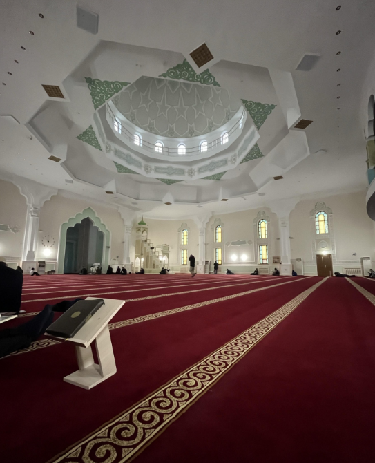

Mangystau Regional Mosque – the spiritual heart of the region
The Regional Mosque in Aktau is the largest Islamic religious structure in the region, combining traditional Eastern design with modern architecture.
- Opened: 2002
- Capacity: over 2,000 people
- Features: two minarets, a dome with national patterns
- Purpose: Friday prayers, holidays, and Islamic lectures
What to see?
- 🕌 Spacious prayer hall
- 📖 Madrasa and Islamic library
- 🧠Architectural complex with fountains and gardens
How to get there?
📠Aktau, 14th microdistrict
🚌 Public transport, city minibus routes
🚶 15–20 minute walk from city center
Visitor Information
⏰ Open daily from 08:00 to 21:00
🎟️ Free entry (dress code applies)
🧕 Headscarves for women, modest clothing for men
The Regional Mosque is not only a place of worship but also a symbol of unity and culture of the people of Mangystau.
PHOTOS

